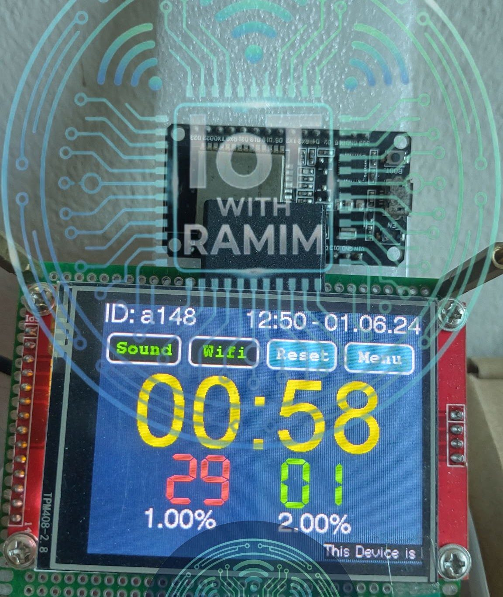
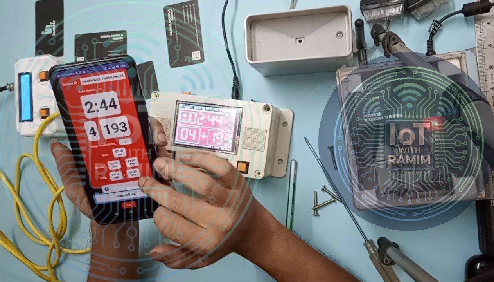
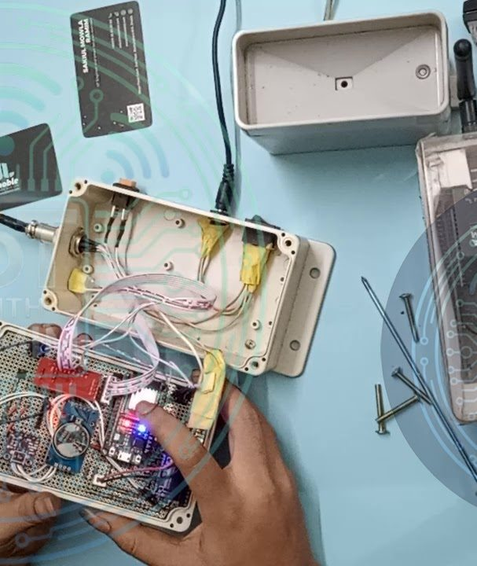
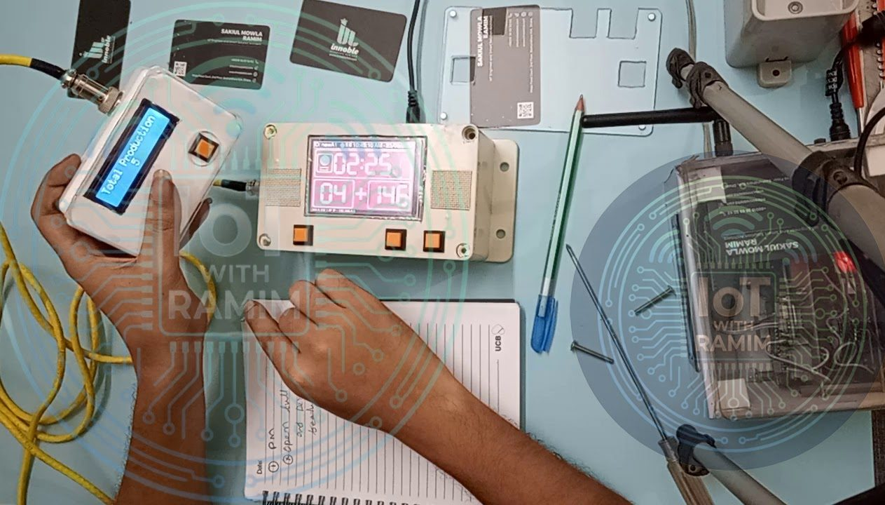
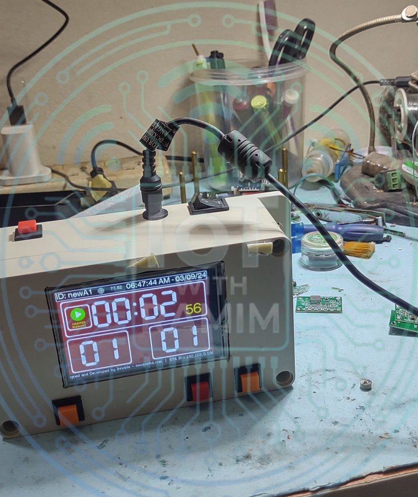
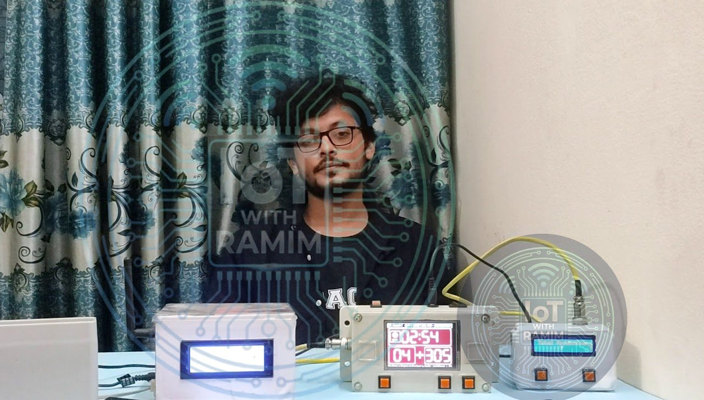

Industrial
Worker Efficiency Monitor
A smart industrial production monitor (IIoT) for the garment sector. This edge device gamifies the production floor: it tracks target vs. actual output in real time, adjusts goals with a carry-over algorithm, and gives workers visual and audio feedback to keep them in the green zone.
- Sector
- Manufacturing (garments)
- Role
- Senior IoT Engineer (firmware & hardware architect)
- Type
- Automated worker efficiency monitor
- ESP32
- FreeRTOS
- ILI9341 TFT
- PCF8574
- MAX98357A I2S
- SD card
- MQTT
- REST API
- Android
The problem
In the labour-intensive garment sector, production targets change constantly. Supervisors had no real-time visibility of micro-stoppages, and workers had no immediate feedback on their own performance.
The solution
I engineered an edge-computing IIoT device that turns the production floor into a game. It tracks target vs. actual metrics in real time, adjusts goals dynamically with a carry-over algorithm, and uses visual and audio feedback to keep each worker in the green zone.


Hardware
The hardware is designed to handle frequent user interaction and data logging at the same time.
- MCU: dual-core ESP32, chosen for its multi-threading capability.
- Display: 320×240 TFT touchscreen (ILI9341 driver) rendered at high speed with the TFT_eSPI library.
- Input: eight physical push buttons on a PCF8574 I2C expander, used for quick increment/decrement of production counts (standing in for machine sensor inputs) and for menu navigation.
- Audio feedback: MAX98357A I2S DAC amplifier for voice prompts and alerts.
- Storage: SD card (SPI) for configuration, assets and Excel-compatible CSV logs.


Firmware architecture: FreeRTOS
To keep the user experience non-blocking, I structured the firmware as separate FreeRTOS tasks running in parallel.
Task orchestration
- Production task: the core business logic, stopwatch and shift management.
- Server task: an asynchronous HTTP web server for API communication.
- GUI task: dedicated display rendering. Mutex semaphores prevent SPI bus collisions between the display and the SD card.
System reliability
- Watchdog timer: the ESP32 task watchdog restarts individual tasks automatically if they hang.
- Power-loss recovery: the running state is written to storage every few seconds, so after a power cut the device resumes exactly where it left off.


Software ecosystem and connectivity
The system creates a connected floor on a local network architecture, keeping data secure and transmission fast.
- MQTT telemetry: the device acts as an MQTT client, publishing key production metrics (real-time count, efficiency %, active time) to a local server/broker for central logging.
- REST API: endpoints allow device telemetry to be queried directly.
Mobile application
I developed a companion Android app for industrial production engineers (IPEs):
- Live dashboard: real-time status of every connected device on the floor.
- Data export: download daily production logs as CSV, directly from a specific device or from the server.
- Wireless configuration: set the standard minute value (SMV) and hourly targets for a line remotely, without physical access.
Operational workflow
- Setup: the line chief sets the daily target and SMV on the touchscreen or wirelessly from the mobile app.
- Operation: each time the worker finishes a garment, the count goes up, triggered by the physical button or an external sensor.
- Calculation: the ESP32 calculates real-time efficiency (%) from elapsed time against the adaptive target.
- Feedback (gamification): on track, the display shows green indicators that reinforce good performance; when the worker falls behind, the I2S audio plays a warning and the display flags the delay in red or orange.
- Reporting: all data syncs to the server over MQTT, so management can analyse bottlenecks and historical performance.